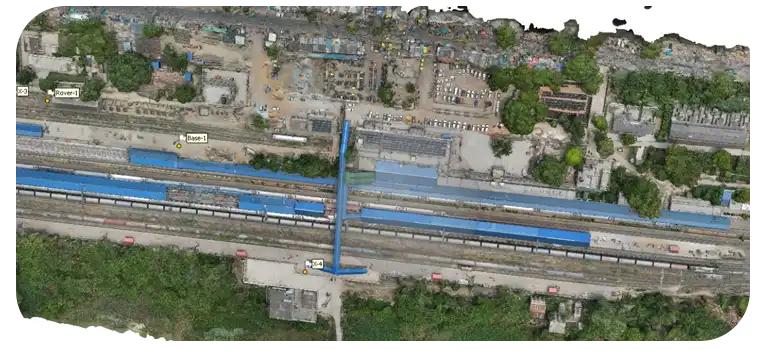
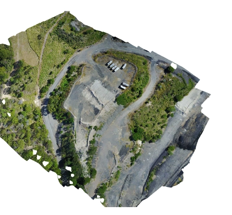
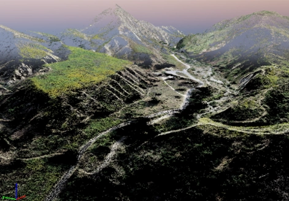
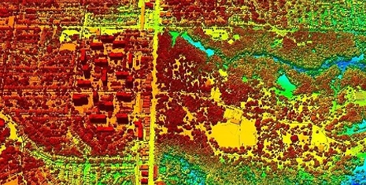
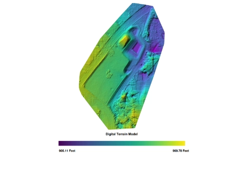
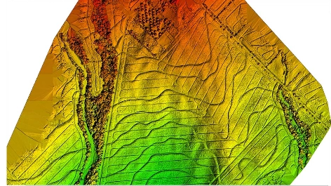
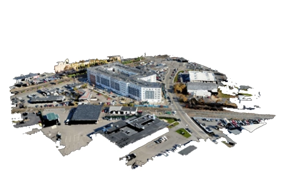

Data Quality Control and Analysis
- Validate the accuracy and completeness of the generated 3D models and maps.
- Conduct any necessary adjustments or corrections to improve the quality of the data.
- Perform measurements, analysis, and interpretation of the photogrammetric outputs to extract relevant information.
- Share the validated models and maps with stakeholders for feedback and further insights.
- Use the extracted information to support decision-making processes in relevant projects or applications.
- Document the methodologies and workflows used in the photogrammetric process for reproducibility and future reference.
- Train team members or clients on how to utilize the photogrammetric data effectively.
- Stay updated with advancements in photogrammetry techniques and software to continuously improve the quality and efficiency of data processing.

Deliverables

Orthomosaic map
Drone photographs are corrected for distortion and seamlessly merged during post-processing to produce a remarkably precise orthomosaic map. Every pixel on this map includes high 2D geographic data (X, Y), allowing exact measurements such as horizontal distances and surface areas to be collected directly.

3D Point Cloud
Drone images processed to create dense point clouds yield precise models with geographic coordinates (X, Y, Z) and color data for accurate measurements of horizontal and vertical lengths, areas, and volumes. These point clouds offer highly detailed representations, enhancing measurement precision in various applications.

DSM
A DSM captures the natural and built features' on the Earth's surface. DSMs represent the bare- earth and all of its above-ground features. Drone images can also be used to create DSM models of the area. Each pixel contains 2D information (X, Y) and the altitude (Z value) of the highest point for this position.

DTM
DTM's (Digital Terrain Model) are detected using aerial photography at low heights with a geometrically calibrated camera. This enables the drone to obtain all the heights of the surveyed terrain. In these models, each pixel stores 2.5D information, including the X, Y, and Z values corresponding to the highest altitude.

Contour map
By utilizing a contour line map created from a DTM or DSM model with specific contour intervals, we can gain a deeper understanding of the area photographed by the drone. The contour intervals can be adjusted according to the project's requirements, enhancing the detail and accuracy of the analysis.

3D Textured Mash
A 3D textured mesh generated from drone imagery offers a detailed and accurate representation of the site's surfaces, walls, and edges. This model enhances understanding by providing a comprehensive view of the area, essential for precise analysis and project planning.
Our Features

5x Faster Delivery
Our dedicated team of GIS experts works tirelessly to swiftly process and analyze drone survey data, ensuring prompt delivery, often ahead of schedule.
99% Accurate Measurement
We achieve up to 99% accuracy in our results, employing advanced machine learning techniques for precise yield estimation, volumetric measurements, and more.

Team of Experts
Our seasoned team of GIS engineers, drone pilots, and software engineers operates round-the-clock, delivering unparalleled service excellence.
Advanced Equipment
Equipped with cutting-edge drones featuring high-resolution sensors, our surveying capabilities are bolstered by both DJI models and custom-made drones.
Frequently asked questions
What is drone photogrammetry?
Photogrammetry builds maps and 3D models from many overlapping aerial photos. Processing software matches points across the photos to produce an orthomosaic, a surface model and a 3D mesh.
How accurate is drone photogrammetry?
With RTK or PPK positioning and well-placed ground control points, drone photogrammetry typically reaches a few centimetres of accuracy. The ground sample distance (GSD), which depends on camera and flying height, sets the level of detail.
What is a ground control point (GCP)?
A GCP is a marked point on the ground whose coordinates are measured with DGPS. GCPs tie the drone map to real-world coordinates, and independent checkpoints are used to prove the final accuracy.
What file formats will I receive?
Usually GeoTIFF orthomosaics and elevation models, contours and features in DWG or DXF, GIS layers as shapefiles or GeoPackage, and point clouds in LAS or LAZ.